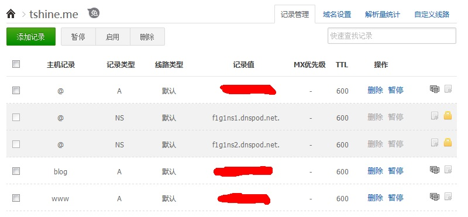
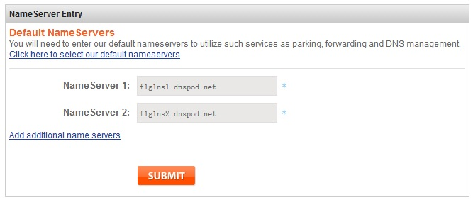
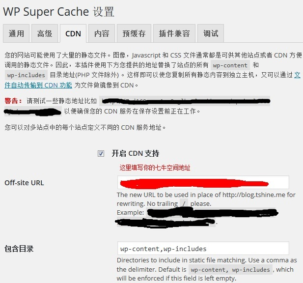

网页响应速度慢有很多种情况，比如网站服务器搭建在国外、服务器带宽不够、服务器性能不足，还有一些“中国特色”的困扰等等……这几个问题在这个网站blog.tshine.me全部存在！不做优化的话基本上打开一次要35秒以上，体验及差。现在优化以后基本可以做到12秒加载完成。主要优化的项目有DNS解析、静态缓存、CND加速、Gravatar链接替换、Google链接替换。
DNS解析优化
将你的域名解析服务器替换为DNSPOD，提高网站的解析速度，更有利网站加速，这项优化对域名提供商在国外的情况效果更佳，首先到DNSPOD官网注册一个账号，填写域名信息，如下图（红色部分是你的服务器ip）

再将上图中的＂f1g1ns1.dnspod.net＂和＂f1g1ns2.dnspod.net＂设置到你的域名服务商后台NameServer中，比如下面这个是namesilo域名服务商后台的设置。

注意：修改 DNS 服务器需要 0-72 小时的全球生效时间，如果发现某些地方记录没有生效，并且修改 DNS 的时间还不到 72 小时，请耐心等待。 这样域名解析优化就算完成了。
Gravatar优化
默认刚装好的Wordpress都附带了Gravatar头像服务，而Gravatar服务器在国外，又被GWF给盯上了，所以在打开网站的时候试图从Gravatar获取头像的时候就会获取不到，还会影响网页的整体加载速度。
解决方案就是将Gravatar替换为“多说”，或则本地缓存，具体替换方案在解决Gravatar头像被墙这篇文章有写，这里就不再复述了。
静态缓存
使用WP Super Cache插件对网站做静态缓存，提高服务器性能。摘一段网上找来的介绍，大概了解一下原理和优点。
什么是WP Super Cache？
WP Super Cache从你的动态Wordpress Blog中生成静态的html文件。当一个html文件生成后，你的服务器就会用显示这个文件来取代处理相对而言需要更大工作量和更多WordPress PHP脚本的动作。 生成的静态html文件会为你的绝大部分用户服务，除了那些在发表评论后在评论表单中显示的用户详细信息，那些请求由PHP处理。 静态文件会为下列用户显示: 未登录用户。 没有在你的Blog上发表评论的用户。 或没有访问密码保护文章的用户。 99%的访客会由静态html文件服务。 没有看到静态文件的用户也会从中受益，因为那些看到会看到常规WP-Cache缓存文件，所以你的服务器就不会像往常那样忙碌。 这个插件会帮助你的服务器处理当你的某个网页出现在Digg.com或其他社会化网站首页时的访客潮。 如果由于某些原因“超级缓存”无法在你的服务器工作也不必担心。 缓存仍然会继续执行，但是每个请求都需要调用PHP引擎。 在正常情况下，这样还算不错。你的访客不会发现站点打开速度减慢或是任何不同，或发现你的网站正在经受大流量的冲击。 超级缓存html文件会比PHP生成缓存文件更快显示，但是在日常使用中差异并不明显。
这款插件安装方法很简单，到Wordpress后台插件搜索Wp Super Cache安装即可，安装启动后在到wp后台->设置->WP Super Cache设置中选中和勾选需要的功能即可，大部分情况下将插件推荐的选项勾上就可以达到加速效果了，还可以开启预缓存服务。
CDN加速
CDN加速简单的来说，就是将网站服务器上的网站资源转移到CDN服务器上，当用户访问网站时，会从CDN服务器上拿对应的资源，而且CND服务器还会通过判断访问用户的网络情况提供更快的访问节点，这样既可以节省网站服务器的流量带宽，还可以提高访网站的响应和加载速度。
这里我选择免费的国内CND服务商“七牛云存储”来做CND加速服务。
关于七牛的注册和设置流程请参考官网或者搜索引擎的介绍。这里介绍下Wordpress的设置。
同样用到了WP Super Cache插件，在插件设置界面下的CDN页签选择“开启CDN支持”，然后在Off-site Url填写七牛提供的CDN网址即可，如下

设置保存以后就生效了，可以清除浏览器缓存以后重新打开网站。查看网页源代码是否有七牛空间的地址，如果有的话就设置成功了。
qiniusetting1
替换Google链接
这里说的替换google链接指的是WP主题中使用了Google字体、Google公用库的情况，众所周知，google在中国大陆是无法访问的，这就导致了和上面Gravatar一样的情况，无法加载主题字体，严重拖慢网站加载速度。
解决方法：安装 Useso take over google 插件
这款插件会自动把所有页面中出现的对Google字体、Google公共库的引用，换成对useso的引用，保证国内能正常访问资源。
OKAY，如此这般，基本上已经消除了大部分拖慢网站加载速度的因素了。